第十二章 硫酸及硝酸制造法
1 概述
硫酸和硝酸都属于强酸类，用途非常广泛，是制造爆破器材的主要原料。如在制造硝化甘油、二硝基萘、梯恩梯和特屈儿等各种炸药时，需要用硫酸和硝酸；制造雷汞和雷银等起爆药时，需要用硝酸。
爆破器材制造中对酸的需要量是比较大的，如硝化10公斤的水银或银，就需要90～100公斤浓度60%的硝酸，再如要硝化100公斤的甘油，就需要混酸700公斤。
2 硫酸的性质
纯硫酸为无色油状液体。无水硫酸受热时放出 $ SO_3 $ 。市售的浓硫酸一般浓度为 93%，稀硫酸的浓度为 65%。
硫酸有强的腐蚀性和吸水性，它能吸收空气中的水蒸汽。吸收水分后，硫酸的浓度降低。硫酸吸水放出热量，若将水加入硫酸中，会产生局部沸腾，所以在稀释硫酸时，只能缓慢地把酸注入水中。
石灰和碱都可以将硫酸中和，中和后生成一种没有酸性的硫酸盐类，同时硫酸的腐蚀性也随之消失。若硫酸洒在地面上，可用石灰中和以消除其腐蚀性。
硫酸与多种金属均发生化学作用，如铝、铜、锌和铁等金属材料置于硫酸中很快就被腐蚀。随着金属的活泼性不同，硫酸被还原的反应式如下：
由于锌的活性强还可以进行下列反应
硫酸浓度愈低，其腐蚀性愈大。若硫酸的浓度在74%以上时，则普通的钢铁也能耐腐蚀，而铅能耐浓度80%以下的硫酸腐蚀。
3 硫酸制造简述
制造硫酸的原料为硫磺或硫铁矿，在空气中燃烧制成二氧化硫,
二氧化硫(\(SO_2\))不能直接与氧化合得到三氧化硫(\(SO_3\))，可采用不同的方法使它转化，在工业上完成这一步骤有两种方法，即亚硝基法和接触法。亚硝基法中又分为塔式法与铅室法两种。
亚硝基法: 使二氧化硫与氧作用转化成三氧化硫，遇水生成硫酸。 二氧化硫在水汽、空气、一氧化氮及二氧化氮共存下反应，可得70％浓度的硫酸，其反应如下：
其硫酸的所得纯度较低，无法除去一氧化氮及二氧化氮，又
所以混有$ HNO2$ 及 $ HNO3 $ 。
接触法是目前工业上制造硫酸的主要方法，整个方法主要包括四步：通过硫化矿或硫黄的高温焙烧产生二氧化硫气体；二氧化硫与氧气在高温催化下通过可逆反应化合生成三氧化硫；用浓硫酸吸收三氧化硫，产生发烟硫酸；以及最终发烟硫酸的用水稀释，得到硫酸成品。
二氧化硫和空气会先经过净化，除去杂质，以免对下一过程采用的催化剂造成影响。
在常压和摄氏450度下，把二氧化硫和空气通过五氧化二钒（$ V_2O_5 $）催化剂，制得三氧化硫。铂也可用作催化剂，但是其价格较昂贵，且较易和杂质反应而损失。
在吸收塔内，三氧化硫会溶于98%的硫酸中，形成发烟硫酸。
发烟硫酸经适量的水稀释后，便形成98%的硫酸，所制得的硫酸会被冷却及储存。
三氧化硫与水的反应非常剧烈，如果直接溶于水中，就会释出大量热能，并形成硫酸雾，阻碍溶解过程，而且难以收集。此外，三氧化硫在硫酸中的溶解度比水高，因此硫酸制造厂不会把三氧化硫直接溶于水。通常是用98.3%的硫酸吸收SO3，再用水稀释。
4 缸塔法制造硫酸
缸塔法是根据铅室法的基本原理，使二氧化硫与含硝硫酸作用而转化为三氧化硫，制成硫酸。
缸塔法的整个生产过程所用的塔全部是采用民间使用的瓷缸，因而称之谓缸塔法。
缸塔法的特点是，设备来源广阔，就地取材，不受条件限制，建设速度快，投产速度快。如采用其他方法制造硫酸时，从建厂到投产需要1～2年的时间，而采用缸塔法则只需一个月的时间。在抗战年代，由于环境条件的限制，多采用此种方法。缸塔法制造硫酸平面布置如图150所示。
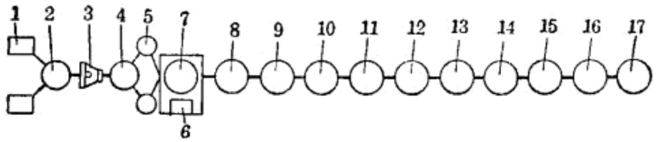
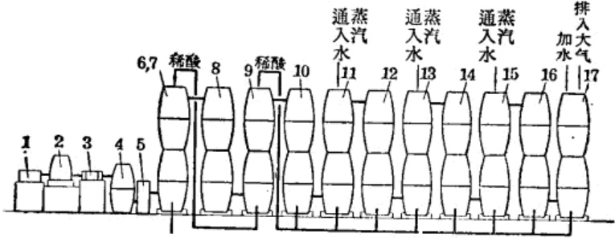
9—3塔(循环塔)；10—4塔；11—5塔；12—6塔；13—7塔；14—8塔；15—9塔；16—10塔；17—11塔。
缸塔法所采用的设备为：
(1) 风箱：用以代替鼓风机，使硫磺燃烧和推动整套设备中气体流动，它的构造与民间使用的风箱相同，只是尺寸较大，用木材制成，在一端有排气活门，另一端有进气孔。箱内装有活挡，用人工抽拉，产生圧缩空气排入气包。风箱的构造如图 152 所示。拉杆向 A 进气口方向抽动时，A 进气口活门关闭，空气从 B 进气口进入，由出气口排出。当拉杆向 B 进气口方向推进时，A 进气口活斗开启，B 进气口关闭，空气由排气口排出。为加大风挡作用，一般是在风挡上捆有许多羽毛。箱体要严密，以免漏气。
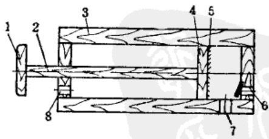
(2)气包：为贮存气体之用，由一个大缸及底座构成(如图 153 所示)。
将缸安装在水泥制成的底座上，在缸与底座接触的部位，为防止漏气，在空隙处可加水进行水封。当空气由入气口充满缸时，缸内压力不断增高，则缸受气体压力作用而上升，当气体排出，缸内压力降低，缸即下降到底。操作人员由此可掌握气包的压力，使之均衡。
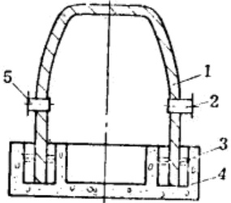
(3)硫磺燃烧箱：是一个三角形的铁箱，一端有进气口，另一端有 $ SO_2 $ 的出口，上部有一个加料盖，其构造如图 154 所示。它是用来使硫磺在其中燃烧生成二氧化硫。
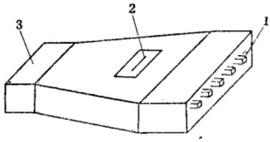
(4)立缸：是用一个大陶缸制成的，在缸口上盖一个大盆，用泥封严；硫磺燃烧所生成的二氧化硫经立缸清除尘土和硫磺杂质。同时，立缸可使空气与二氧化硫混合均匀。立缸如图155所示。
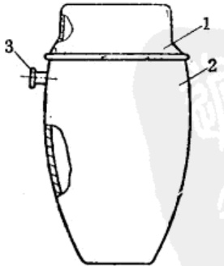
由立缸引出一对导管，利用部分二氧化硫气体的压力使二氧化氮进入脱硝塔(1塔)。
(5)二氧化氮发生器：是一个铁罐子，以导管与立缸相连通，在罐内加入无水硝酸钾和硫酸氢钾，加热后即有 \(NO_2\) 气体流出。可准备两个发生器进行交替使用，使 \(NO_2\) 气体的供应连续不断。无水硝酸钾与硫酸氢钾在罐中按下式反应
但也可以直接使用硝酸，使其按下式分解
(6)脱硝塔(1塔)：脱硝塔使二氧化硫与含硝硫酸在其内作用，一部分转化成三氧化硫然后生成硫酸；其余部分经脱硝塔进入反应室。由第3塔出来的酸再加入脱硝塔浓缩，其所制成的硫酸其浓度可达57～60%。
脱硝塔(1塔)是由数个大瓷缸连接而成(如图156所示)，缸接缝要严密，不能漏气，塔外壁用耐酸泥封起来，其四周用土坯围起，中间留有10公分左右的空隙。在塔边生一火炉进行保温。开工前还须对塔加温，可促进化学反应。
在塔内装漏碎瓷充填物，上部的碎瓷片尺寸小一些，下部的大一些；上部碎瓷之间的间隙小些，下部的间隙要大些，使上述的 $ SO_2 $ 分布均匀和下落的脱硝硫酸散布均匀。在塔的上部有导管与第2塔相通，下部有一根导管与立缸相连接，作为 $ NO_2 $、 $ O_2 $、 $ SO_2 $ 气体的入口。
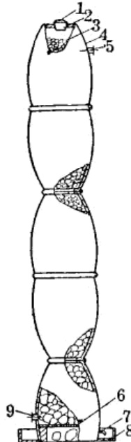
(7)图151 上的 2、3、4、5、6、7、8、9 和 10 塔亦均用缸垒成，并有导管相通。第2塔内部不加填充物，仅为铅室作用。第3塔为循环塔，在塔内装满填充物，装填方式与1塔基本一致。在塔顶有塔盖及分酸盆，其作用是将4～11塔中生产的稀硫酸，重新加入此塔，使其浓度增大。如27%的稀硫酸加入此塔，可增浓至35～45%，并可提高酸的温度。夏季加入酸的温度35～37℃，经此塔可增高到70℃，在冬季也可由20℃提高到60℃，此塔制出的酸再加入到第1塔进行循环。在4～10塔中均有少量的填充物，主要起铅室作用，使反应不完全的气体继续反应。
(8)吸收塔(11塔)：亦由瓷缸垒成，塔内填满石英或碎瓷片或以碳酸钙做为填充物。在塔顶有一个喷水口，在夏季加入冷水，冬季加入温水，以吸收酸雾或反应不完全的气体。
若反应装置送入的风量过大或通入水蒸汽过多，则会造成化学反应不正常的状态。经 11 塔还可吸收约 7～17% 的稀硫酸，再加入到第 3 塔中浓缩。若整个反应完全正常，则 11 塔内就不会产生硫酸烟雾。
由于 11 塔填充碳酸钙时，可能被稀硫酸分解而堵塞，故一般不用碳酸钙作填充物，而是采用石英或瓷片。
5 缸塔法的设备制造和选择
以瓷缸作为塔体，可完全达到就地取材制造设备。瓷缸对酸有较大的抗触性，但当它受温度骤冷骤热的作用和受外界的机械冲击作用时，性能较差，容易碎裂。
(一)选缸
-
要选择原料细，质地致密，釉发亮，内外表面无裂纹和砂眼的缸，这种缸敲打时可发出清脆悦耳的声音。
-
缸口要圆，否则，当缸与缸接合时不能严密接触。
-
塔体所用的一套瓷缸，口径尺寸要基本一致，以求严密配合。
(二)建塔
用缸制成的塔体，有两种形式，一种是重叠法(如图 157 所示)，即将缸底多余的部分打掉，以一缸的小口放在另一缸的大口上，这样依次重叠成塔，为防止下缸的口部由缸的自重而压裂，可以在缸壁加一道箍。
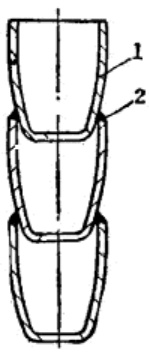
另一种方法是对口法(图158)，即选择口径尺寸相同的缸，利用缸口对缸口，缸底对缸底的办法，一对对重叠成塔，只将缸底打掉即可。上述两种办法，均可组成缸塔。但在打缸底时要打的整齐，不要打裂。打缸底时，可先划好线，用锥形小凿子和小铁锤轻轻敲打。先打一道沟，再逐步加深和加宽，这样可顺利地打掉缸底。
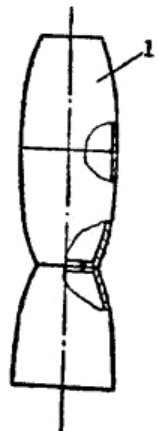
脱硝塔(1塔)承受的温度较高，容易破裂，为防止破裂，可采用以下方法：
(1) 在塔体缸的内部，套入一个小缸(\(SO_2\)入口和出酸口均应穿过两层缸体)，两个缸的中间加入一些耐酸石子(如石英石等)，再灌入石膏使其凝固在一起。
(2)或者在塔内壁砌上一层瓷制或陶制的小砖(耐酸砖)，以耐酸胶泥衬砌塔的底部，砌的高度由底部起约1.2~1.6米即可。脱硝塔的内部温度较高，为防止外界气候条件骤冷骤热的影响，使塔体破裂，在塔体的外部需要进行保温。
塔内放填充物，是为了使 $ SO_2 $、 $ SO_3 $、 $ N_2O $ 等气体与水蒸汽以及气体与气体之间的接触面积加大，促进反应完全。塔内的填充物一般是石英石(硅石)、碎瓷片等耐酸材料。塔内下部的填充物要大一些，如为 15～20 厘米的大石块；上部的填充物可小一些，通常为 2～5 厘米的瓷片或瓷环。
填充物是否耐酸，简易的试验方法是将石块或碎瓷片等置于硫酸中，若不发生气泡，不变色，不溶解；用硫酸浸泡十天后，取出放置数日不发生崩裂，即为耐酸材料。
第 1 塔、第 3 塔、第 11 塔的塔顶均要加酸或加水，因此在塔顶上要放置一个分酸器，它是用一个瓷盆在其底部钻有许多小孔，使酸或水经过小孔均匀地分布于塔中(如图 159 A 型所示)。
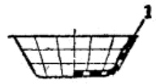
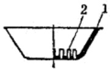
为保持一定高度的液面，最好采用图159 B 型的装置，在盆底装一些小玻璃管，使酸或水由玻璃管溢流到内塔。在分酸器的上部扣上一个大小合适的瓷盆，以防止酸挥发损失。
塔与塔之间的连通和出酸管，可采用质地较好的内外有釉的陶瓷管，最好用玻璃管连接，这样既耐酸腐蚀又可通过它观察反应情况。
6 缸塔法操作注意事项
(一)开工前的准备工作
-
硫磺的准备：制造硫酸所使用的硫磺，不能用粉状硫，因粉状硫磺一经点燃即会升华。硫磺中若含有过多的杂质，会影响产品质量，所以粗硫要精制才能使用。一般是将精制合格的硫磺打碎成每边不大于8厘米的小块，装入硫磺燃烧箱内准备点火。
-
开工前要仔细检查全套装置是否正常，并提前 16 小时将脱硝塔的炉火生着，使塔温逐渐升高，达到反应需要的温度。
-
开工前 2 小时，在 $ NO_2 $ 发生罐内及硫磺燃烧箱内分别加料，待 $ NO_2 $ 气体产生后，再用烧红的铁条点燃硫磺燃烧箱内的硫磺。
-
硫磺点燃时，所用的铁条不宜烧得过红，因温度过高，会使一部分硫磺升华。
-
产生 $ NO_2 $ 的铁罐子加热时，温度应由低到高逐渐上升，使 $ NO_2 $ 继续不断地产生。如温度忽高忽低，会使罐中的硫酸钾凝固而影响 $ NO_3 $ 不断地产生。
-
点燃硫磺后，隔15分钟左右，在脱硝塔内加入浓硫酸或脱酸的亚硝基硫酸。
-
开工前 1 小时，将水蒸汽锅炉准备好。向塔内供应的水蒸汽量不宜过大或过小，过大时则影响成品酸的浓度；过小时也影响产品得率。根据经验，在 $ SO_2 $、 $ NO_2 $ 和 $ O_2 $ 等气体正常反应的状态下可每隔 7~8 分钟通入一次水蒸汽。
-
硫磺的投入量，每次可加入5～10公斤。5～10公斤的硫磺可燃烧1.5～2小时。加入硫磺的时间要很好掌握，不要过早或过迟，否则会影响 $ SO_2 $和 $ NO_2 $的产生效果。
-
拉风箱送进空气，速度要均匀一致，勿忽快忽慢，以免硫磺损失。
(二)稀酸循环
由吸收塔(11 塔)和 4～10 塔所制出的酸，均是稀酸，这些稀酸的浓度也不一致，要经混合使其浓度不低于 27%，然后再加入第 3 塔。由第 3 塔制出的酸浓度约为 35～45%，将其加入第 1 塔，由第 1 塔出来的酸即为成品酸。
浓度低于 20% 的稀硫酸，不宜直接加入第 1 塔，因低浓度的稀硫酸在第 1 塔中会妨碍 $ NO_2 $ 的正常作用。
(三)停工注意事项
-
停工时，让第1塔的炉火自然熄灭，以免冷空气突然侵入塔中，使塔体因骤冷而破裂。如隔2~3天仍需开工时，则不必熄灭炉火，可维持到开工。
-
清除硫磺燃烧箱内的残渣。
-
清除 $ NO_2 $ 发生器中的残渣。
7 硝酸的性质
纯硝酸外观为无色的液体，比重1.53，沸点 $ 86℃。当温度为 $ -41℃时，即凝固为透明的结晶体。
硝酸在常温下，即可分解发烟，硝酸的蒸气与空气中的水蒸汽接触形成细小的雾滴。硝酸与水可以任意比例混合，在混合时放出热量。
硝酸的化学稳定性较差，只要受到光线的作用就会逐渐分解为水、氧和二氧化碳分解反应式为：
当温度愈高和温度愈大时，分解的速度愈快。
硝酸具有很强的腐蚀性，除了对金和铂以及一些稀有金属难起作用外，与其它金属均能起作用，在工业中一般采用铅制品盛放浓硝酸。稀硝酸一般采用瓷器或不锈钢作为容器。硝酸对人的皮肤有烧伤作用，硝酸蒸气对人的吸收器官有强烈的刺激作用，所以在硝酸制备时不能直接接触。
8 缸法制造硝酸
抗战时期，环境动荡，敌人还不断地对解放区进行骚扰，因此，制造方法必须简单，设备轻巧，符合战时条件。当时没有采用工业上用的电弧法和氨氧化法，而是采用以火硝与硫酸反应的缸法制造硝酸。
(一) 反应原理
缸法的主要设备是瓷缸，所使用的原料是火硝与浓硫酸，其反应式为
或
除上述以硝酸钾或硝酸钠为原料外，也可以硝酸铵为原料与浓硫酸作用制成硝酸，但得率低，残渣多，有复分解产生。其生成硝酸的反应式为：
(二)原材料准备
制造硝酸所使用的原料为火硝与硫酸。
-
火硝：火硝在使用前要经过干燥。干燥时不能用火直接加热，是采用火墙干燥室法干燥，温度为75～80℃，干燥6～8小时。
-
硫酸：使用的硫酸温度愈大愈好，温度愈大所制成的硝酸温度也愈高。当时是采用96%以上的浓硫酸，将硫酸测过比重后，即可准备投料。火硝与浓度为96%以上的浓硫酸的投料比为1:1(按重量比)。
(三)工艺装置
缸法制造硝酸所采用的工艺装置如图 160 所示。
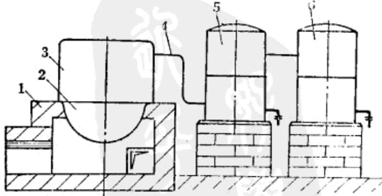
加热炉是用土坯或砖砌成，方形圆形均可。反应器用铁锅或瓷缸，反应器盖可采用与锅(或缸)口大小相同的瓷缸或盆，反扣在反应器上，在其壁上有装导气管的孔。导气管通常用直径为40～50毫米的瓷管。冷却室用两个瓷缸对扣起来(接缝处应严密)，并有导管将5、6两冷却室连通。在冷却室内填充耐酸的碎瓷片做为填充物。出酸管可用玻璃管或瓷管。
(四)工艺操作
-
加料：先按规定比例1:1称取火硝和浓硫酸，将反应器擦干净后，在反应器内将定量的火硝加入幷铺平，再将硫酸缓慢地加入，加料次序绝对不能颠倒。如先加入浓硫酸而后加入火硝，由于浓硫酸的强烈吸水作用而放热会使物料局部沸腾引起物料四殴，烧伤操作人员。加酸的速度不宜过快。物料加入后，立即盖严。为防止漏气可用石棉油灰或水玻璃石棉石英灰，把盖封严。
-
加热反应：物料加完后，封好加料口，生着火炉加热，加热温度要由低到高，使温度徐徐上升，控制反应器内的温度不超过150℃。如温度骤然上升，物料会产生激烈反应，使硝酸损失较多，影响得率。
当温度超过86℃以上时，就有硝酸气体产生，由导管进入冷却室，经自然冷却而成为硝酸，由出酸管流出。通常以火硝和96%以上的浓硫酸反应，可制出比重1.3～1.51的浓硝酸。根据当时生产情况，如投料28公斤的火硝，需反应36～48小时。
-
清理反应器残渣：当操作结束后，将反应器盖子打开，用提勺将其中残渣掏出，所制得的硝酸即是成品。
(五)硝酸浓缩
缸法所制出的硝酸，其比重通常在1.30~1.52之间。为了得到高浓度的硝酸，在当时就采用制造硝酸的装置，以浓硫酸脱去稀硝酸中的水份，经蒸馏、冷却而制取的。其工艺方法是，首先在反应缸内加入浓硫酸，再将稀硝酸加入其中，用铝棒搅拌数分钟，令其混合，然后再扣上缸盖，以耐酸胶泥将缸口封严。物料的加入量，最大为反应缸全部容积的 $ \frac{1}{2} $。浓硫酸与稀硝酸的投料比(按重量比)为1:1。
物料加入后，将缸口封严，生着火炉徐徐加热，使温度逐步上升。当温度达到 86℃ 时，硝酸气体被蒸馏出来，打开管道上的开关。令气体进入冷却室冷却，即可制成浓硝酸。温度在 86℃ 时所制出的硝酸浓度可达 95% 以上。在不同的温度条件下，可得到不同浓度的硝酸。不同浓度的硝酸沸点如表 43 所示。
| 硝酸浓度% | 0 | 10 | 30 | 40 | 50 | 60 | 70 | 80 | 90 |
|---|---|---|---|---|---|---|---|---|---|
| 沸点(℃) | 100 | 103.6 | 108 | 112.6 | 117 | 120 | 121.6 | 115.5 | 102 |
9 配酸浓度计算法
根据需要，有时要调整酸的浓度，例如用100公斤浓度93%的酸，要求稀释到75%，则需要加入的水量是多少？可按下法计算(如图161所示)。
图中 A 点—原料酸的浓度；
B 点—E 点与 D 点渡度之差值；
C 点—A 点与 E 点浓度之差值；
D点—加入水的含酸浓度；
E 点—要求的漫度。
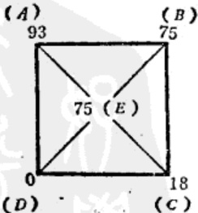
图161 配酸渡度计算
由上图计算得知，75份重量，浓度93%的酸需加入18份重量的水，才能配成75%浓度的酸，因此，有100公斤93%浓度的酸要配成浓度75%所需的水量为
式中 x —加入的水量(公斤)。
由上式可知，需加水 24 公斤。
按上述方法，可计算出各种浓度酸的物料配比量。
| 设备 | 工具 | 仪器 | |
| 名称 | 材料 | ||
| 风箱 | 木、鸡毛 | ||
| 气包 | 瓷缸 | ||
| 硫磺燃烧箱 | 铁箱、硫磺 | 铁条 | |
| 立缸 | 瓷缸 | ||
| $ NO_2 $发生罐 | 铁罐、硝酸钾、硫酸氢钾 | ||
| 脱硝塔 | 瓷盆、瓷缸、土坯、填料 | 盛酸用的酸坛 | 比重计、温度计 |
| 2塔 | 瓷缸 | 酸坛 | |
| 3塔 | 瓷缸、瓷盆、填料 | 酸坛 | 比重计、温度计 |
| 4~10塔 | 瓷盆、填料 | 酸坛 | |
| 吸收塔 | 瓷缸、填料、瓷管、填料 | 酸坛 | 比重计、温度计 |
| 管路 | 瓷管、玻璃管 | ||
| 水蒸汽发生炉 | 小茶炉 | ||
| 序号 | 工序 | 设备 | 工具 | 仪器 |
|---|---|---|---|---|
| 1 | 反应 | 炉子 | 温度计 | |
| 大锅炉 | ||||
| 瓷缸 | ||||
| 2 | 冷却 | 瓷缸 | 酸坛 | 比重计 |